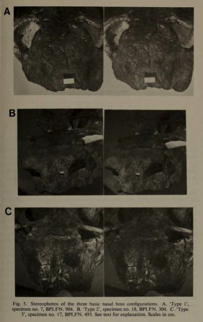

-
A bivariate analysis of skulls revealed that there might not be much if any
difference in the male and females of A.bainii. Robert Broom, the founder of 2
Dicyndont species, speculated that male A.bainii have larger nasal bosses and canine
tusks that are further apart and longer than the females have.
-
Image A: Sex could not be determined, but speculated to be a young male
-
Image B: Female skull
-
Image C: Male skull
More facts, please!